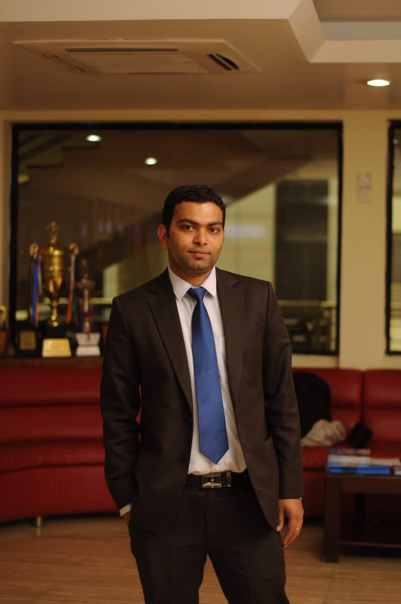

Senior IT Leader · ERP Specialist
14+ years bridging business process
and enterprise technology across Nepal.

I'm an ERP/SAP process-focused IT professional with over 14 years of experience in enterprise IT operations, business systems enablement, infrastructure, and cross-functional transformation.
My strength lies in bridging the gap between business users, functional consultants, and technical teams — translating operational needs into governance-aligned ERP solutions that actually get adopted.
Currently serving as Sr. Manager – Corporate IT at Varun Beverages (Nepal) Pvt. Ltd., a PepsiCo bottler, overseeing multi-site operations across 2 plants and the corporate office supporting 350+ users.
Lead and coordinate business systems and IT operations across Nepal locations, with strong involvement in ERP/SAP process support, requirement alignment, user coordination, documentation, validation, and implementation readiness.
Drove 10+ SAP process enhancements including DR/CR commercial adjustment, PM material issue alignment, RGP/subcontracting improvements, and VISI movement process design. Developed structured SOPs and user manuals improving implementation discipline.
Built foundational ERP support operations. Supported HRIS, DMS, and SFA implementations. Established endpoint management across 200+ devices improving reliability for business applications and ERP usage.
Managed documentation, system administration, and operational support. Supported ERP-related ecosystem operations, Office 365 / Google Workspace, SharePoint, and user enablement across diverse academic stakeholders.
Reviewed plans, method statements, and implementation documentation. Supported technical surveys, installation supervision, testing, and acceptance activities within a compliance-focused structured project environment.
Systems/network administration, backup, troubleshooting, and user issue resolution. Built foundational experience in technical support execution and service reliability.
NCIT — Nepal College of Information Technology
Thesis in progress
Nepal Engineering College
Led 10+ SAP sub-process improvements across finance and operations including DR/CR adjustments, PM material issue alignment, RGP/subcontracting, and VISI movement process design.
End-to-end HR information system implementation including requirement gathering, process alignment, documentation, UAT coordination, and post-go-live support.
Implemented DMS to streamline distribution workflows. Coordinated with business users, vendors, and technical teams for rollout across multiple distribution points.
Supported SFA platform implementation for field sales operations. Managed change communication, user training, and post-implementation stabilization.
Designed and set up industrial ICT infrastructure for Varun Beverages Nepal, covering network design, endpoints, and operational connectivity across plant and corporate sites.
Supported ERP implementation at an academic institution including system administration, user coordination, documentation, and service delivery across business functions.
Certified Network Security Professional
Networking Fundamentals
Cisco Certified Network Associate
EMTE, Indra, AviBit, Vaisala Specialist Trainings
Registered Engineer — Active Member
Kathmandu Sustainable Urban Transport Project (SMEC Holdings / GEOCE)
I'm open to ERP consulting opportunities, senior IT leadership roles, and collaborative implementations across Nepal and beyond.